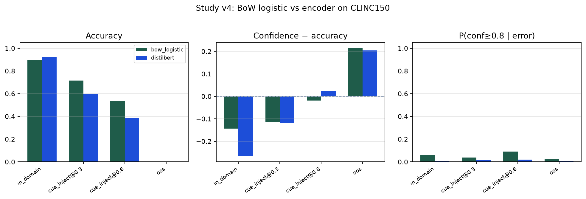
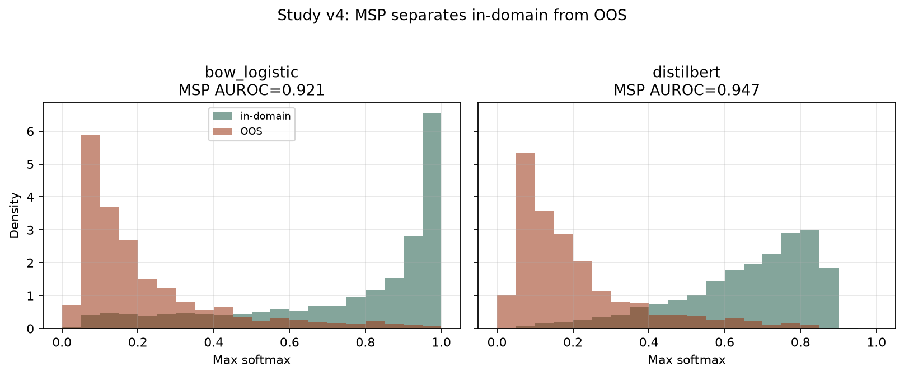
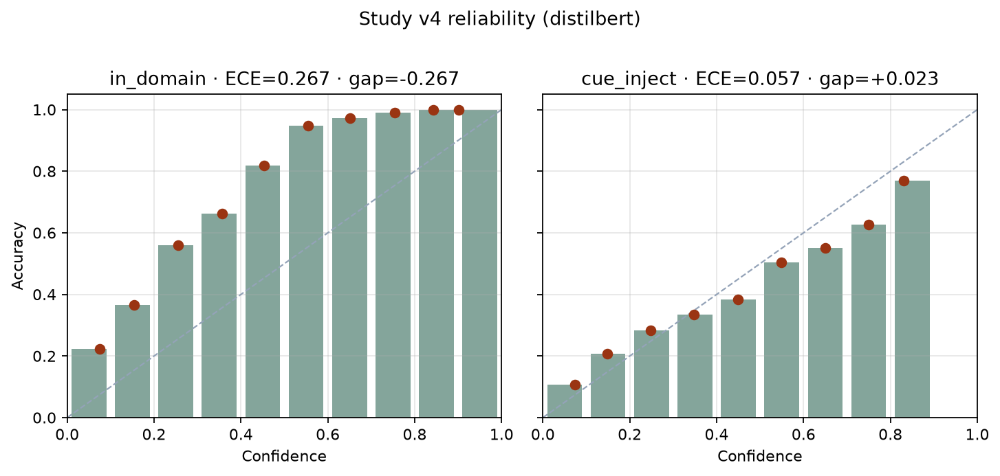

Study v4 complete · encoder also did not reproduce synthetic overconfidence
Encoder check — same CLINC150 splits
A fine-tuned encoder on the same CLINC150 splits still does not reproduce study v2’s overconfidence. Cue-inject@0.6: conf−acc +0.023, P(conf≥0.8|error) 0.021. OOS mean confidence 0.204 (P(high-conf|error) 0.006). MSP already separates in-domain from OOS (BoW AUROC 0.921; encoder 0.947). The synthetic pathology needs a corruption that makes the model confidently wrong, not only a stronger model or an unseen-intent split.
Setup
| Piece | Choice |
|---|---|
| Data | DeepPavlov/clinc150 · fingerprint 6369fc73a44085b8 · CC BY 4.0 (CLINC150 / DeepPavlov HF release) |
| Protocol | Train without OOS class. Cue-inject uses the same lexical-cue procedure as study v3, on the same test utterances. Both models see identical shifted text. |
| BoW column | CountVectorizer(1-2gram) + LogisticRegression (study v3 class) |
| Encoder column | distilbert-base-uncased fine-tuned, seed 42, epochs=2 |
| Device / train | mps · 2 epoch(s) · batch 8 · max length 64 |
| OOS scoring | No OOS class. Every OOS example is an error. Report confidence and MSP AUROC, not dummy accuracy. |
uv venv .venv-encoder --python 3.12 uv pip install -r research/code/requirements-encoder.txt python research/code/study_encoder_clinc150.py
Headline figure

OOD detection (MSP)
Max softmax probability as an in-distribution score (Hendrycks & Gimpel 2017). Label 1 = in-domain test, 0 = OOS.
| Model | ID mean conf | OOS mean conf | MSP AUROC |
|---|---|---|---|
| BoW logistic | 0.754 | 0.215 | 0.921 |
| DistilBERT | 0.657 | 0.204 | 0.947 |

BoW logistic (replication of study v3)
| Condition | n | Acc | Mean conf | ECE | Conf − Acc | P(conf≥0.8|err) |
|---|---|---|---|---|---|---|
| in_domain | 4500 | 0.898 | 0.754 | 0.144 | -0.144 | 0.059 |
| cue_inject @ 0.3 | 4500 | 0.715 | 0.600 | 0.115 | -0.115 | 0.039 |
| cue_inject @ 0.6 | 4500 | 0.535 | 0.516 | 0.068 | -0.019 | 0.091 |
| OOS (errors by construction) | 1000 | 0.000 | 0.215 | 0.215 | +0.215 | 0.028 |
DistilBERT
| Condition | n | Acc | Mean conf | ECE | Conf − Acc | P(conf≥0.8|err) |
|---|---|---|---|---|---|---|
| in_domain | 4500 | 0.924 | 0.657 | 0.267 | -0.267 | 0.006 |
| cue_inject @ 0.3 | 4500 | 0.597 | 0.478 | 0.119 | -0.119 | 0.015 |
| cue_inject @ 0.6 | 4500 | 0.388 | 0.411 | 0.057 | +0.023 | 0.021 |
| OOS (errors by construction) | 1000 | 0.000 | 0.204 | 0.204 | +0.204 | 0.006 |
In-domain DistilBERT is more accurate than BoW (0.924 vs 0.898) and more underconfident (gap -0.267 vs -0.144). Cue-inject@0.6 edges into a tiny positive gap (+0.023), but P(conf≥0.8|error) is 0.021 — not study v2’s 0.43. BoW metrics in this file match study v3 bit-for-bit; the datasets fingerprint string can differ by library version.

How to read this against study v2
Synthetic cue-inject@0.6 was conf−acc +0.20 and P(high-conf|error) 0.43. That is the existence proof that this measurement loop can see overconfidence. Study v3 asked whether the same lexical cue injection, plus genuine OOS, produces that pattern on real CLINC150 text with the same linear model. It did not. This pass asks whether that null was “the linear model cannot be overconfident” (Guo et al. 2017: modern nets are the usual overconfidence case).
- CLINC150: Larson et al. 2019, EMNLP.
- MSP OOD baseline: Hendrycks & Gimpel 2017.
- Neural overconfidence: Guo et al. 2017.
Limits
- One encoder, two epochs, no temperature scaling or other post-hoc calibration.
- Cue injection is still a lexical attack, not ASR lattices.
- OOS accuracy is zero by scoring choice. Interpret confidence and MSP AUROC.
- Ops probes remain in-sample descriptive AUCs, not holdout detectors.